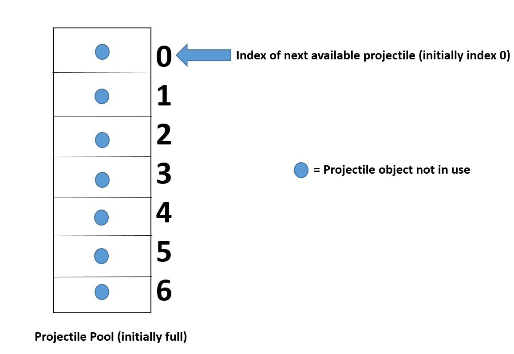
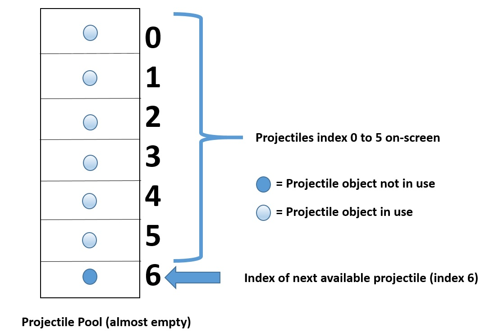
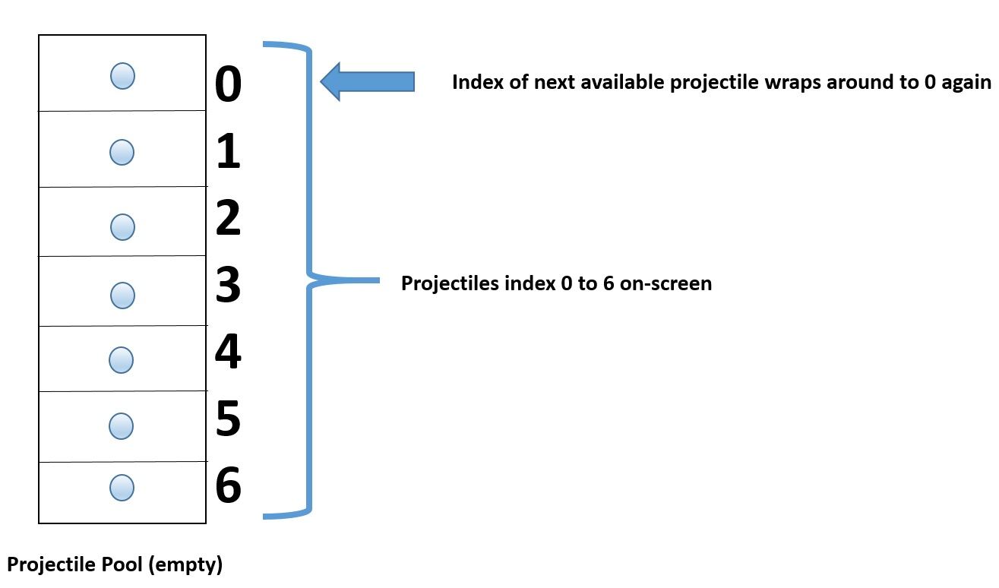

To be completed by: Week 13 (Fri 24/11)
Learning Outcomes:
Continue with the sample Visual Studio solution 'SFML_Playground' from lab 5.
6.1 Implementing a projectile pool
We are now going to implement projectile firing from our tank. We could simply generate projectiles on demand as the user presses fire. However, rather than allocating and destroying these objects on demand, we keep a set of initialised projectiles in a container (such as an array) ready to be used. A client of the pool will request a projectile, perform operations on it and it will be 'returned' to the pool when no longer needed. This type of approach is often applied in cases where many objects need to be generated quickly, and those objects have a short life span.
We will use a game design pattern called the Object Pool pattern to implement a pool of projectiles.
We start with two classes. The first class, Projectile, will store basic information about the projectile such as it's speed and screen position.
The second class, ProjectilePool, will manage a container (pool) of projectiles, and it is through ProjectilePool that we request access to a Projectile.
Let's try and visualise how this will work. Say we have a small pool of 7 projectiles. Initially the pool is full and will look like this:

The pool class maintains an index of the next available projectile, which is set to 0 initially. Now imagine that 6 of the 7 projectiles are on-screen. The pool now looks like this:

The index of the next available projectile points to the last object in the pool. When this object is requested, the pool will now be empty. What do we do if a further projectile is requested from the pool? There are several possible strategies we could take, but the simplest is to wrap the index so that it starts at 0 again:

If a request comes in for another projectile, we must then re-use the projectile at index 0 which is currently on-screen. Note that the position of a projectile within the array does not tell us anything about how long it has been on-screen, i.e. if projectiles are used in sequence from index 0 to index 6, you cannot assume the 'oldest' projectile will always be at index 0. Projectiles are returned to the pool when they go off-screen or collide with an obstacles such as a wall or another tank.
6.2 Implementing a projectile pool
Download the necessary files for this lab from here. Unzip the file and add the files Projectile.h, ProjectilePool.h and their respective .cpp files to your project. Let's consider class ProjectilePool first, let's consider it's private data members first:
private:
static const int s_POOL_SIZE = 100;
// A container for the projectiles.
std::array<Projectile, s_POOL_SIZE> m_projectiles;
// The index of the next available projectile.
int m_nextAvailable { 0 };
// A flag indicating whether there are any projectiles available (initially they are).
bool m_poolFull { false };
So the pool size is 100. We use a C++11 style array to hold the projectile instances. std::array is a template class, the first template argument is the class type you wish to store in the array (Projectile), the second is the size of the array (s_POOL_SIZE).
The index of the next available projectile is set to 0, and finally we have a flag m_poolFull to keep track of the pool full status.
In the public interface, there is a standard no-op default constructor defined:
/// <summary>
/// @brief No-op default constructor
/// </summary>
ProjectilePool() = default;
Note that when we make an instance of ProjectilePool, the array m_projectiles is automatically populated with 100 Projectile instances.
Next, we have a member function called create() which client code will use to request access to a projectile (read the comments to see exactly
what each function does):
/// <summary>
/// @brief Creates a projectile.
/// Creates a projectile from the pool of available projectiles.
/// If no projectiles are available, the next in (pool) sequence after
/// the last used projectile is chosen.
/// </summary>
/// <param name="texture">A reference to the sprite sheet texture</param>
/// <param name="x">The x position of the projectile</param>
/// <param name="x">The y position of the projectile</param>
/// <param name="rotation">The rotation angle of the projectile in degrees</param>
void create(sf::Texture const & texture, double x, double y, double rotation);
The main task of the update() member function is to loop through every projectile in the array and invoke their update() function in turn:
/// <summary>
/// @brief Updates all projectiles in the pool.
/// Sets an index to the next available projectile. Also sets a
/// status flag to indicate pool full (all projectiles in use).
/// </summary>
/// <param name="dt">The delta time</param>
/// <param name="rotation">A reference to the container of wall sprites</param>
void update(double dt, std::vector<sf::Sprite> & wallSprites);
Finally, the render() member function draws all active projectiles. A projectile is considered active if it's speed value is set (i.e. to it's max.
possible speed).
/// <summary>
/// @brief Draws all active projectiles.
/// </summary>
/// <param name="window">The SFML render window</param>
void render(sf::RenderWindow & window);
Note that in the implementation of the render() function, we have this line:
window.draw(m_projectiles.at(i).m_projectile);
m_projectile is a sf::Sprite which is a private property of the Projectile class. So how can this class access the private member variable
of class Projectile? In C++, we have a special mechanism to enable this behaviour by which one class can 'befriend' another. Which brings us
nicely to the Projectile class...
At the beginning of the declaration for class Projectile, we have:
class Projectile
{
// Allows the ProjectilePool direct access to the private members of Projectile.
// This is so the ProjectilePool can access the Projectile sprite representation so it
// can be rendered.
friend class ProjectilePool;
The declaration friend class ProjectilePool enables the ProjectilePool class access the private member variables of class Projectile without
the need to provide a getter method. This is considered acceptable practice because the Projectile objects are tightly coupled to the ProjectilePool
class.
Let's start with a quick look at the private members of Projectile:
private:
bool Projectile::isOnScreen(sf::Vector2f position) const;
// Max. update speed
static constexpr double s_MAX_SPEED { 1000.0 };
// Movement speed.
double m_speed { s_MAX_SPEED };
// A sprite for the projectile.
sf::Sprite m_projectile;
// The bounding rectangle for this projectile.
sf::IntRect m_projectileRect { 5, 178, 10, 6 };
isOnScreen() is a private helper method that returns true if this projectile is on screen.
s_MAX_SPEED is a constant value that we use to define the projectiles maximum speed.
The current movement speed of a projectile is stored in m_speed.
m_projectile is our sprite representation of a projectile, while m_projectileRect defines the bounding rectangle for the projectile - this information is taken from the sprite sheet.
In the public interface, we have an init() member function that takes the same arguments as ProjectilePool::init(). This is how we initialise a Projectile - remember we don't create them as they exist already in the pool.
The primary job of the update() member function is to calculate the next screen position for the projectile, and to perform collision checking between the projectile and walls:
/// <summary>
/// @brief Calculates the new position of the projectile.
/// If this projectile is currently in use (on screen, speed non-zero), it's next screen position
/// is calculated along a vector that extends directly from the tip of the tank turret.
/// If the newly calculated position is off-screen, then the projectile speed is reset to 0.
/// Otherwise (projectile still on-screen), a collision check is performed between the projectile
/// and every wall. If the projectile collides with a wall, it's speed is reset to 0.
/// </summary>
/// <param name="dt">The delta time</param>
/// <param name="wallSprites">A reference to the container of wall sprites</param>
/// <returns>True if this projectile is currently not in use (i.e. speed is zero).</returns>
bool update(double dt, std::vector<sf::Sprite> & wallSprites);
Exercise 1: Add the ProjectilePool as a data member of class Tank called m_pool. (Note: this is an example of composition - a Tank 'has a' projectile pool).
Exercise 2: Add the following member function to class Tank:
Tank.h
/// <summary>
/// @brief Generates a request to fire a projectile.
/// A projectile will be fired from the tip of the turret only if time limit between shots
/// has expired. Fire requests are not queued.
/// </summary>
void requestFire();
Tank.cpp
////////////////////////////////////////////////////////////
void Tank::requestFire()
{
m_fireRequested = true;
if (m_shootTimer == s_TIME_BETWEEN_SHOTS)
{
sf::Vector2f tipOfTurret(m_turret.getPosition().x + 2.0f, m_turret.getPosition().y);
tipOfTurret.x += std::cos(MathUtility::DEG_TO_RAD * m_turret.getRotation()) * ((m_turret.getLocalBounds().top + m_turret.getLocalBounds().height) * 1.7f);
tipOfTurret.y += std::sin(MathUtility::DEG_TO_RAD * m_turret.getRotation()) * ((m_turret.getLocalBounds().top + m_turret.getLocalBounds().height) * 1.7f);
m_pool.create(m_texture, tipOfTurret.x, tipOfTurret.y, m_turret.getRotation());
}
}
This new member function will request a projectile from the pool and position it at the tip of the tank turret.
Add the constant s_TIME_BETWEEN_SHOTS to class Tank as follows:
// The delay time between shots in milliseconds.
static int const s_TIME_BETWEEN_SHOTS { 800 };
You will also need to add member variables m_fireRequested and m_shootTimer. Don't forget to initialise these variables to sensible values.
Make sure the project builds ok before proceeding.
Exercise 3: Add the following logic to class Tank. If fire is pressed, call the new Tank::requestFire() member function. Build and run project to test. A projectile should appear at the tip of tank turret. (Hint: if you see nothing, remember that projectiles need to be drawn).
Try rotating the turret and fire again. Does the projectile appear in the correct place?
Exercise 4: Now add the following logic to Tank::update(). If a fire request has been generated and the shoot timer has not reached zero, then decrement the shoot timer by the delta time (dt). Otherwise, reset the shoot timer and set the fire requested status to false. Build and run project to test.